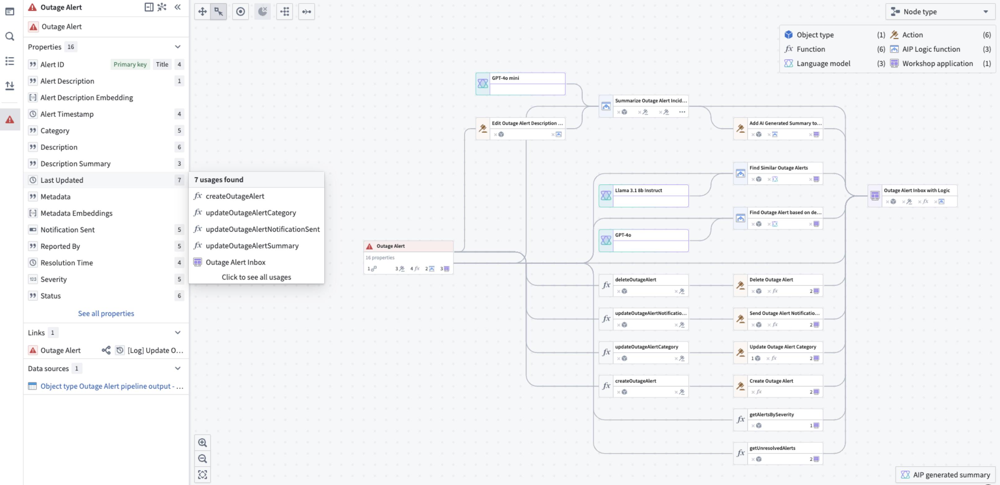
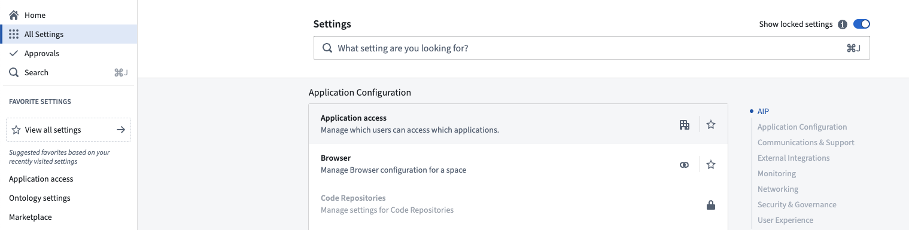
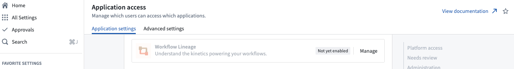
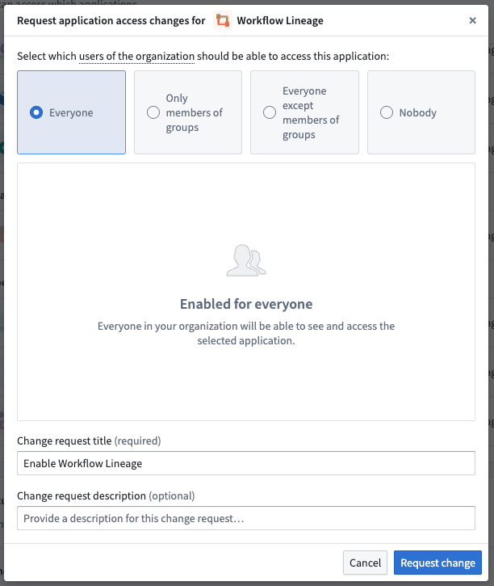

:::callout{theme="neutral"} The application previously known as Workflow Builder is now called Workflow Lineage. :::
Workflow Lineage provides an interactive workspace for understanding and managing applications and their underlying processes.

With Workflow Lineage, you can perform the following:
Code snippets
View model lifecycle stages, such as experimental, deprecated, or sunset, directly in search results.
For a specific column in an object, view all usages downstream including dependent actions and Workshop applications.
View weekly usage metrics for Workshop applications, including total and unique views.
Use the color legend to view metadata about your workflow organized by category, including node types, permissions, usage metrics such as application views and last reindexed status, and organizational structure.
Use presentation mode to create and organize visual snapshots of your workflow graph.
Bulk select actions to update the actions to a specific version simultaneously.
Bulk replace models across multiple AIP Logic functions to migrate off deprecated models or evaluate new models across a workflow.
Update submission criteria directly without creating a proposal.
Work on global branches to inspect, edit, and validate workflow resources before merging changes into main. Learn more about Branching in Workflow Lineage.
Search service logs produced by a resource to investigate recurring errors or intermittent issues.
Visualize cross-ontology relationships by displaying resources from multiple ontologies on a single graph.
Workflow Lineage is particularly suitable for the following users:
:::callout{theme="neutral"} To enable Workflow Lineage, contact your platform administrator to modify application access in Control Panel. :::
The intent of Workflow Lineage is to help understand, manage, and debug workflows. Workflows typically span a spread of ontology resources and often flow into an application. As such, Workflow Lineage is complementary to Pipeline Builder and Data Lineage:
For example, to review the schedules for data flowing into an object type, right-click the object type in Workflow Lineage and open it in Data Lineage. You can also open Pipeline Builder object types in Workflow Lineage from Pipeline Builder.
Learn how to get started with Workflow Lineage.
You can control which users in your organization have access to Workflow Lineage in Control Panel.

On the Application settings tab of Application access, navigate to the Ontology section. Select Manage to the right of the Workflow Lineage entry.

Select Manage to open up a window where you can configure your enrollment's preferences.
